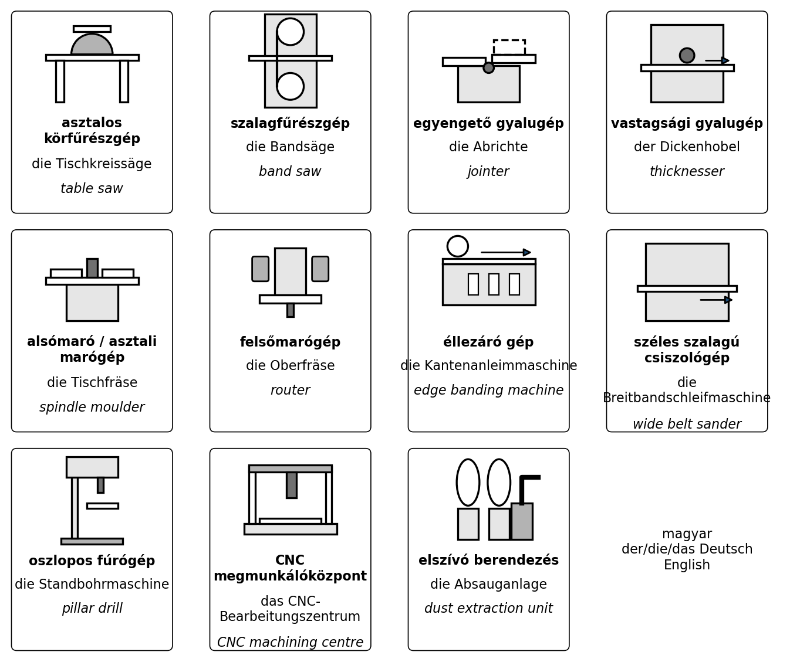

Képzeld el, hogy egy ausztriai vagy németországi asztalosműhelyben kapsz egy utasítást: „Prüfe die Maschine, dann schalte die Absaugung ein!” Ha nem érted a Prüfe (ellenőrizd) vagy az Absaugung (elszívás) szót, lassabban dolgozol, de ami sokkal fontosabb: veszélybe kerülhetsz. Az idegen nyelv az asztalos számára nem nyelvvizsgakérdés, hanem szerszám a biztonsághoz, az álláshoz és a vevői kapcsolathoz. Ebben az alfejezetben a legfontosabb nyelvtani alapokat, a bemutatkozást, a formanyomtatvány kitöltését és a magyar–német–angol asztalos szakszókincset nézzük át.
Állásinterjún két nyelven ugyanaz a mintakérdés:
Egy frissen végzett asztalos válasza lehet:
A válasz mögött már ott van az igeidő, a szórend, a szakképesítés megnevezése és a bemutatkozás szerkezete. Most ezeket bontjuk lépésekre.
A munka világában mindig azt kell kifejezned, mit csinálsz most, mit végeztél el korábban, mit fogsz csinálni később. A három időt itt csak a leggyakoribb beszélt formákban mutatjuk.
Definíció. A jelen idő a folyamatban lévő vagy rendszeresen ismétlődő munkát fejezi ki. A múlt idő az elvégzett, befejezett munkát, a jövő idő a későbbi szándékot, tervet vagy munkafázist.
Példák az asztalos étkezőasztal munkahelyzetéből:
| Helyzet | Német | Angol | Magyar |
|---|---|---|---|
| Jelen – rendszeres munka | Ich arbeite in einer Möbelwerkstatt. | I work in a furniture workshop. | Egy bútorasztalos műhelyben dolgozom. |
| Jelen – éppen folyik | Ich schleife die Tischplatte. | I am sanding the table top. | Éppen csiszolom az asztallapot. |
| Múlt – beszélt forma | Ich habe die Tischplatte geschliffen. | I sanded / have sanded the table top. | Megcsiszoltam az asztallapot. |
| Múlt – elbeszélő egyszerű múlt | Ich arbeitete in einer Schreinerei. | I worked in a joinery. | Egy asztalosműhelyben dolgoztam. |
| Jövő – terv, szándék | Ich werde die Kanten anleimen. | I will glue the edges. | Az éleket fogom lezárni/ragasztani. |
Szabály. A német beszélt nyelvben a múlt időnek leggyakrabban a Perfekt formáját használjuk: haben/sein + főige befejezett melléknévi igeneve, például ich habe geschliffen. Az angolban a befejezett múlt lehet past simple (I sanded) vagy present perfect (I have sanded), utóbbi akkor, ha az eredmény most is fontos. A jövőre a német a werden + főnévi igenév, az angol a will + főnévi igenév szerkezetet használja.
Munkabeszámoló példa:
Megjegyzés. A német Perfekt pontos szabályaihoz a haben vagy sein segédigét a szótár jelzi. A gyakori sein-es múlt például: ich bin gegangen (elmentem). A tankönyvi szabályok részletezése meghaladja ennek az alfejezetnek a kereteit.
A biztonsági utasításokban, megbeszéléseken és interjún folyamatosan kell tiltani, kérdezni, feltételt fogalmazni. A formalitás most is a leggyakoribb mintákra épül.
Tagadás. Németben két alapforma: a nicht tagadja az igét vagy a mondatrészt, a kein tagadja a főnévi kifejezést (amikor magyarban „nincs”, „nem egy” értelem szerepel). Angolban a do not/don’t, does not/doesn’t, did not/didn’t az egyszerű igéhez, a not a segédigékhez csatlakozik.
Példák:
Feltételes mód. Arra jó, hogy udvariasan vagy óvatosan fogalmazz: mit tennél más helyett, mit javasolnál.
Szabály. A würde + Infinitiv és a would + infinitive a folyamatban lévő beszédben a leggyakoribb feltételes forma. A valódi feltételes múlt (hätte/wäre vagy would have) a fenti mintánál ritkábban, de kerettervben is szerepel.
Segédigék: képesség, lehetőség, szükségesség. A leggyakoribb három:
| Jelentés | Német | Angol | Példa |
|---|---|---|---|
| Képesség | können | can | Ich kann eine Lamello fräsen. / I can cut a biscuit slot. – Tudok lamellóhelyet marni. |
| Lehetőség / engedély | dürfen | may | Darf ich die Fräse benutzen? / May I use the router? – Használhatom a felsőmarót? |
| Szükségesség / kötelezettség | müssen | must / have to | Ich muss eine Schutzbrille tragen. / I must wear safety goggles. – Védőszemüveget kell viselnem. |
A német müssen és az angol must erős kötelezettség; a have to hétköznapibb. Az angol may mellett járhat can is engedélykérésre, de a may udvariasabb.
Kérdésfeltevés és szórend. A kérdésnél a legfontosabb, hogy a kérdező szándéka világos legyen.
Szabály. Német egyszerű kijelentő mondatban a ragozott ige a második hely: alany – ige – mondatrész, például „Ich (1) schalte (2) die Maschine ein.” Angolban a szórend rögzítettebb: alany – ige – tárgy/helyhatározó, például „I switch on the machine.” A magyarhoz képest a szórendet nem mindig lehet egy az egyben átvenni.
A magyar beszélőnek két hangkészlete szokatlan: a német és az angol magánhangzó-hosszúság, valamint néhány speciális hang. Tökéletes kiejtés nem kell, de a biztonsági szavakat pontosan kell érteni.
Német. Az ö és ü ajakkerekítéssel képződik; a ei ejtése kb. áj: die Arbeit kb. árbájt; az ie hosszú í: die Maschine kb. masí-ne; a ch az e, i, ö, ü után puha (kb. h, mint a magyar h enyhe), az a, o, u, au után erősebb, torokban képzett (pl. machen – máhen). A szóvégi -e nem éles, kb. -e (pl. Säge – kb. zé-ge).
Angol. A th kétféle: zöngétlen, mint a thin (vékony) elején, zöngés, mint a the (a) elején; a magyar t vagy sz nem jó. A w nem v, hanem két ajakkal képzett; az r nem pergetett; a magánhangzók hossza megkülönböztet: ship (hajó) és sheep (birka) nem ugyanolyan. A biztonsági gloves (kesztyű) és goggles (védőszemüveg) gyakori szópár; a gloves végén v+z, a goggles közepén g és l.
Szabály. Hang alapján tanulj szavakat; ne csak betű szerint. A gépen, védőeszközökön lévő feliratot is hangosan ejtsd ki, mert a munkahelyen gyakran a hallott utasítás a fontos.
A bemutatkozás nem magolás, hanem váz. Ugyanaz a minta magyarul, angolul és németül.
Recept. Bemutatkozás külföldi állásinterjún vagy műhelyfőnöknek:
Itt egy kidolgozott bemutatkozás egy 22 éves, frissen végzett asztalostól:
Németül: „Guten Tag! Ich heiße Anna Nagy. Ich komme aus Ungarn. Ich bin Tischlerin. Ich habe in einer Möbelwerkstatt gelernt. Ich arbeite gern mit Massivholz und kann Möbel zeichnen. Ich arbeite genau und halte die Werkstatt sauber. Vielen Dank für das Gespräch.”
Angolul: „Good morning! My name is Anna Nagy. I come from Hungary. I am a qualified joiner. I trained in a furniture workshop. I like working with solid wood and I can draw furniture. I work accurately and keep the workshop clean. Thank you for the interview.”
Magyarul: Jó reggelt! Anna Nagynak hívnak. Magyarországról jöttem. Asztalos vagyok. Bútorasztalos műhelyben tanultam. Szeretek tömörfával dolgozni, és tudok bútort rajzolni. Pontosan dolgozom, és tisztán tartom a műhelyt. Köszönöm a beszélgetést.
Külföldi munkavállaláskor a belépés előtt gyakran egy személyi és munkavállalói adatlapot kell kitölteni. A formanyomtatvány mezőneveit ismerned kell.
| Magyar mező | Német (gyakori) | Angol (gyakori) |
|---|---|---|
| Vezetéknév | Familienname | Surname / Family name |
| Keresztnév | Vorname | First name |
| Születési idő | Geburtsdatum | Date of birth |
| Cím | Adresse | Address |
| Telefonszám | Telefonnummer | Phone number |
| Állampolgárság | Staatsangehörigkeit | Nationality |
| Végzettség / szakképesítés | Ausbildung / Qualifikation | Qualification |
| Nyelvtudás | Sprachkenntnisse | Language skills |
| Munkavállalási engedély | Arbeitserlaubnis | Work permit |
Szabály. A formanyomtatványt ne írd alá addig, amíg nem érted a mezőket. Ha valami nem világos, kérdezz: „Was bedeutet dieses Feld?” / „What does this field mean?” – Mit jelent ez a mező?; „Wie soll ich das ausfüllen?” / „How should I fill this in?” – Hogy töltsem ki?
A munkakörülmények kifejezései a hirdetésekben:
A faipari műhelyben a legfontosabb mondatok gyakran felszólító formában hangzanak el. A felszólítás lehet biztonsági, technológiai, munkaszervezési.
| Jelentés | Német | Angol |
|---|---|---|
| Kapcsold be az elszívást! | Schalte die Absaugung ein! | Turn on the extraction! |
| Kapcsold ki a gépet! | Schalte die Maschine aus! | Switch off the machine! |
| Várj, amíg a fűrészlap megáll! | Warte, bis das Sägeblatt stillsteht! | Wait until the saw blade stops! |
| Viselj védőszemüveget! | Trage eine Schutzbrille! | Wear safety goggles! |
| Ne nyúlj a forgó szerszámba! | Greif nicht in das laufende Werkzeug! | Do not touch the rotating tool! |
| Ne távolítsd el a védőburkolatot! | Entferne die Schutzabdeckung nicht! | Do not remove the guard! |
| Hozd ide a ragasztót! | Bringe den Leim! | Bring the glue! |
| Mérd meg a szélességet! | Miss die Breite! | Measure the width! |
Megjegyzés. A német felszólító módban gyakori, hogy az ige első helyen áll, az elváló igekötő pedig a mondat végére kerül: Schalte die Maschine ein! (az einschalten igéből). Ez a szórend a magyarul gondolkodónak szokatlan, ezért érdemes külön gyakorolni. Az angolban a felszólítás az ige alapszava, a tagadás pedig Do not + ige.
Ez a táblázat a műhelyben leggyakoribb szavakat rendezi csoportokba. A német főnevek mellett a nyelvtani nemet is jelöljük, mert a cikket is meg kell tanulni.
Továbbvitt eredmény. Ezt a szakszókincs-táblázatot használjuk a későbbi vizsgafelkészítő részben, a fogalomtár és a szóbeli bemutatkozás gyakorlásakor; a határon túli munkavállalásnál is ez az alapszókincs.
| Magyar | Német (nem) | Angol |
|---|---|---|
| tölgyfa | Eichenholz (das) | oak wood |
| bükkfa | Buchenholz (das) | beech wood |
| lucfenyő | Fichtenholz (das) | spruce |
| fenyő (általában) | Nadelholz (das) | softwood |
| erdeifenyő | Kiefer (die) | pine |
| forgácslap | Spanplatte (die) | particleboard |
| MDF lap | MDF-Platte (die) | MDF board |
| rétegelt lemez | Sperrholz (das) | plywood |
| lécbetétes asztaloslemez | Tischlerplatte (die) | blockboard |
| bútorlap (laminált forgácslap) | melaminbeschichtete Spanplatte (die) | melamine-faced chipboard |
| furnér | Furnier (das) | veneer |
| élzáró szalag | Kantenumleimer (der) | edge banding tape |
| faragasztó | Holzleim (der) | wood glue |
| lakk | Lack (der) | lacquer / varnish |
| pác | Beize (die) | wood stain |
| olaj | Öl (das) | oil |
| csiszolópapír | Schleifpapier (das) | sandpaper |
| csavar | Schraube (die) | screw |
| tipli (köldökcsap) | Holzdübel (der) | wooden dowel |
| lamelló (laposcsap) | Flachdübel (der) | biscuit |
| Magyar | Német (nem) | Angol |
|---|---|---|
| fűrész | Säge (die) | saw |
| gyalu | Hobel (der) | plane |
| véső | Stechbeitel (der) | chisel |
| kalapács | Hammer (der) | hammer |
| mérőszalag | Maßband (das) | tape measure |
| derékszög | Winkel (der) | square |
| csavarhúzó | Schraubendreher (der) | screwdriver |
| fogó | Zange (die) | pliers |
| szorító | Schraubzwinge (die) | clamp |
| fúró (szerszám) | Bohrer (der) | drill bit |
| csiszoló (kézi) | Handschleifer (der) | hand sander |
| Magyar | Német (nem) | Angol |
|---|---|---|
| asztalos körfűrészgép | Tischkreissäge (die) | table saw |
| szalagfűrészgép | Bandsäge (die) | band saw |
| egyengető gyalugép | Abrichte (die) | jointer |
| vastagsági gyalugép | Dickenhobel (der) | thicknesser |
| alsómaró / asztali marógép | Tischfräse (die) | spindle moulder |
| felsőmarógép | Oberfräse (die) | router |
| éllezáró gép | Kantenanleimmaschine (die) | edge banding machine |
| széles szalagú csiszológép | Breitbandschleifmaschine (die) | wide belt sander |
| oszlopos fúrógép | Standbohrmaschine (die) | pillar drill |
| CNC megmunkálóközpont | CNC-Bearbeitungszentrum (das) | CNC machining centre |
| elszívó berendezés | Absauganlage (die) | dust extraction unit |

A képes szótár a fenti két táblázat szavait mutatja ikonszerű rajzzal. A HTML-kiadásban a kártyák nyelvenként szűrhetők, kikérdező módban pedig a nevek csak koppintásra jelennek meg.
| Magyar | Német (die) | Angol |
|---|---|---|
| szélesbítő toldás | Breitenverleimung | edge joint |
| lapolás | Überblattung | lap joint |
| ollós csapozás | Schlitz-Zapfen-Verbindung | bridle joint (open mortise and tenon) |
| vésett csapozás | Zapfenverbindung (Stemmzapfen) | mortise and tenon joint |
| fecskefarkú fogazás | Schwalbenschwanzverbindung | dovetail joint |
| sarokfogazás (egyenes fogazás) | Zinkenverbindung | box joint |
| hornyos-csapos (nút–féderes) kötés | Nut-Feder-Verbindung | tongue and groove joint |
| beeresztés | Einlassung (ellenőrizendő) | housing joint |
| köldökcsapos kötés | Dübelverbindung | dowel joint |
| lamellókötés | Flachdübelverbindung | biscuit joint |
| Magyar | Német | Angol |
|---|---|---|
| Védőszemüveget kötelező viselni! | Schutzbrille tragen! | Wear safety goggles! |
| Hallásvédőt viselj! | Gehörschutz tragen! | Wear hearing protection! |
| Pormaszkot vegyél fel! | Staubschutzmaske tragen! | Wear a dust mask! |
| Az elszívást kapcsold be! | Absaugung einschalten! | Turn on the extraction! |
| A gépet csak betanítás után használd! | Maschine nur nach Einweisung benutzen! | Use the machine only after training! |
| Várj, amíg a szerszám megáll! | Warte, bis das Werkzeug stillsteht! | Wait until the tool stops! |
| A védőburkolatot ne távolítsd el! | Schutzabdeckung nicht entfernen! | Do not remove the guard! |
| Tartsd tisztán a munkaterületet! | Arbeitsbereich sauber halten! | Keep the work area clean! |
| Olvasd el a gépkönyvet! | Betriebsanleitung lesen! | Read the operating manual! |
A szakszókincs tanulásánál nem a szavak magolása, hanem a munkahelyi mondatba ágyazás a cél: egy szót akkor ismersz, ha el tudod mondani, mire való, és utasításban is felismered.
A nyelvi munkának is van „minőségellenőrzése”: amikor megszólalsz, a másik fél értse a lényeget. Ellenőrizd:
1. Magyar szószerinti szórend. Sok tanuló a magyarból indul: „I the machine switch on.” Helyes angol: „I switch on the machine.” Német: „Ich schalte die Maschine ein.” Az elváló igekötő miatt a ein a mondat végén, az ige a második helyen áll. A hiba oka a szabály hiánya; a helyes gyakorlat az igei keret megtanulása.
2. Hamis barátok. A német bekommen azt jelenti, kap, az angol become pedig válni valamivé. „I become a joiner” magyarul: azzá válok, asztalossá leszek, nem „kapok asztalost”. Helyes angol „I am becoming a joiner” a képzés közben; ha megvan a szakma: „I am a joiner.” Az ok a hasonló hangzás; a megelőzés a szópárok külön tanulása.
3. A tagadás félreértése. A német Greif nicht in das laufende Werkzeug! (ellenőrizendő) – egyesek a nicht helyétől elbizonytalanodnak, és kihagyják a tagadást. A tiltás célja itt az ujjak védelme. A nicht az egész cselekvés tagadásakor a mondat végén, az elváló igekötő vagy a főnévi igenév előtt áll. Gyakorolni úgy érdemes, hogy minden biztonsági utasítást először tiltva is elmondasz.
4. Angol kiejtés: w / v, th. A w hangot ne ejtsd v-nek: wood /wʊd/ ≠ vood. (A wood és a would egyébként ugyanúgy hangzik – a szövegkörnyezetből derül ki, melyik.) A th-t ne ejtsd t-nek vagy sz-nek: three ≠ tree. Szópárok gyakorlásra: wine – vine, three – tree; a megoldás a lassú, hangos gyakorlás és a szópárok felolvasása.
Egy frissen végzett asztalosnak egy osztrák műhelyben az első nap a művezető mutatja a gépet. A művezető németül elmondja: „Schalte die Absaugung ein, dann prüfe das Sägeblatt. Trage eine Schutzbrille und Gehörschutz.” A tanuló először nem érti a Sägeblatt szót, de a prüfe és a Schutzbrille szavakból tudja, hogy védőfelszerelés kell. Visszakérdez: „Das Sägeblatt? Wo ist es?” – „Ott van a fűrészasztalban.” A pontos visszakérdezés megelőzi, hogy a gép indítása előtt kihagyja a fűrészlap ellenőrzését. Aznap a munkanaplójába angolul is beírja: „I checked the saw blade and wore safety goggles.” Ebből a kis párbeszédből is látható: az idegen nyelv a biztonsági kultúra része, nemcsak az interjú magánügye.
1. Igaz-e: a német Ich habe die Maschine
geprüft múlt idejű szerkezet. (Miért?)
2. Mit jelent a Warte, bis das Werkzeug
stillsteht! utasítás?
3. Melyik angol segédige fejezi ki a
szükségességet/kötelezettséget?
4. Fordítsd le angolra: „Ne távolítsd el a
védőburkolatot!”
5. Mi a hiba ebben a német mondatban: „Ich schalte die
Maschine ein nicht.”
6. Melyik a helyes angol szó a fűrészre? (a)
saw, (b) see, (c) sew
1. feladat (A): Írd le három nyelvtani időben ugyanazt a munkát: jelen: Csiszolom az asztallapot, múlt: Megcsiszoltam az asztallapot, jövő: Meg fogom csiszolni az asztallapot. Németül és angolul. (Használd a fenti példákat.)
2. feladat (A): Párosítsd a formanyomtatvány mezőket a német és angol megfelelőikkel: Vezetéknév, Telefonszám, Nyelvtudás, Munkavállalási engedély.
3. feladat (B): Alakítsd angol tagadó felszólítássá: „Kapcsold be az elszívást!” – tehát mondd meg, ne kapcsold be. Írd le németül is tagadva.
4. feladat (B): Írj angolul kérdést a „Did” segédigével erre a válaszra: „Yes, I checked the saw blade and wore safety goggles.” Milyen német kérdést tennél fel ugyanerre, ha a válasz hosszú lenne?
5. feladat (C): Egy kolléga németül mondja: „Ich will die Schutzabdeckung entfernen.” Mit mond, és miért kockázatos? Mit válaszolnál neki németül, ha vissza kell tartani a védőburkolat eltávolításától? (Egy egyszerű, udvarias felszólítást adj.)
6. feladat (D): Írj magadról 6–8 mondatos bemutatkozást angolul, a kidolgozott példa vázát használva. Tartalmazza: név, lakóhely, szakképesítés, egy kézi vagy gépi munka, amiben jó vagy, és egy biztonsági szokásod. Készíts hozzá egy német változatot is.
Önellenőrzés – válaszok
1. feladat megoldása. Német: Ich schleife die Tischplatte. / Ich habe die Tischplatte geschliffen. / Ich werde die Tischplatte schleifen. Angol: I am sanding the table top. / I sanded the table top. / I will sand the table top. Ellenőrzés: minden mondatban az igeidőt a ragozott segédige vagy ige mutatja.
2. feladat megoldása. Vezetéknév – Familienname – Surname; Telefonszám – Telefonnummer – Phone number; Nyelvtudás – Sprachkenntnisse – Language skills; Munkavállalási engedély – Arbeitserlaubnis – Work permit.
3. feladat megoldása. Angol tagadó felszólítás: Do not turn on the extraction! (ne kapcsold be az elszívást). Német tagadó felszólítás: Schalte die Absaugung nicht ein! (a nicht a mondatvégi igekötő előtt áll, mert a einschalten elváló igekötője a mondat végére kerül).
4. feladat megoldása. Angol kérdés: Did you check the saw blade? / Did you wear safety goggles? Német kérdés, ha a válasz hosszú lehet: Was hast du geprüft? / Hast du das Sägeblatt geprüft? Ellenőrzés: angol eldöntendő kérdésben a Did az alany előtt; németben az ige az első helyen.
5. feladat megoldása. A kolléga azt mondja: „El akarom távolítani a védőburkolatot.” Ez kockázatos, mert forgács, repülő anyag, ujjsérülés következhet. Válasz németül: Entferne die Schutzabdeckung nicht! / Bitte lass die Schutzabdeckung dran! (Kérlek, hagyd rajta a védőburkolatot.)
6. feladat megoldása – ellenőrző szempontok. A szövegben szerepeljen a név, lakóhely, szakmai azonosító, egy munka (I can use a router / I can sand flat surfaces), egy biztonsági szokás (I always wear safety goggles / I check the extraction before work). A német változatban a bemutatkozó séma hű maradjon a recepthez. Például: „Ich heiße Anna Nagy. Ich komme aus Ungarn. Ich bin Tischlerin. Ich arbeite gern mit Massivholz. Ich kann eine Oberfräse benutzen. Ich trage immer eine Schutzbrille. Vielen Dank.” Ellenőrzés: a német ige a második helyen, az angol mondatok alany-ige szerkezetűek.
A munkahelyi idegen nyelv magja a három idő, a tagadás, feltételes mód, segédigék, kérdésfeltevés és a felszólítások megértése. Jelenben azt mondjuk, mit végzünk éppen, múltban a befejezett munkáról, jövőben a tervről beszélünk. A német beszélt múlt leggyakrabban haben/sein + befejezett melléknévi igenév, az angol múlt lehet past simple vagy present perfect. Tagadásra németül nicht/kein, angolul do not/does not/did not szolgál. Feltételes mód: würde + Infinitiv és would + infinitive. A segédigék között a können/can képességet, a dürfen/may lehetőséget/engedélyt, a müssen/must, have to szükségességet fejez ki. A biztonsági utasításokban a felszólítás megértése életbevágó: Trage eine Schutzbrille!, Do not remove the guard!. A formanyomtatványt csak értő kitöltés után szabad aláírni. Továbbvitt eredmény. A magyar–német–angol asztalos szakszókincs a Vizsgafelkészülés fogalomtárának és a külföldi munkavállalási felkészítésnek az alapja; a későbbi vizsgafeladatokban ezt a táblázatot érdemes elővenni, amikor az asztalos szakmai kifejezéseket rendszerezni kell.
Forrástípusok: általános német és angol nyelvtankönyvek, Europass mintadokumentumok (ellenőrizendő: az aktuális formanyomtatványok mezőnevei és a munkavállalási eljárások), magyar munkaügyi és munkavédelmi szóhasználat, faipari szakszótárak. A német szakmai szavak regionálisan eltérhetnek: Németország egyes vidékein és Ausztriában Tischler, Svájcban és Dél-Németországban gyakran Schreiner; az angol joiner az asztalosiparhoz közelebb áll, a carpenter ács-építő jellegű lehet. A pontos jogi hatályú kifejezések a különböző országokban változhatnak; a munkavállalási engedélyek és adatlapok mezőit mindig az aktuális munkáltatói vagy hivatali sablonnal kell összevetni (ellenőrizendő).